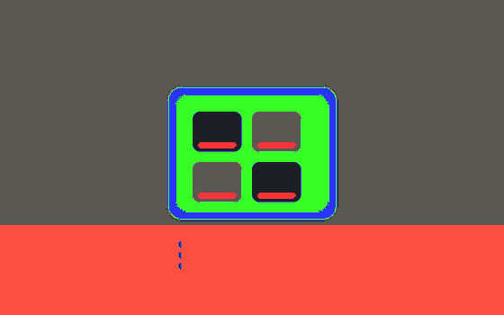

Three principles: predictable (it never acts randomly), overridable (manual action always wins), failsafe (it still works if a sensor dies). With those, ten automations per home is plenty.
Five trigger types#
- Time — curtains at 07:00; check for lights left on at 23:30.
- Presence — mmWave sensors in corridors, bathrooms and entries.
- State — lock unlocked, door opened, device online/offline.
- Environment — lux, temperature, humidity, PM2.5, CO₂.
- Geofence — phone arriving or leaving (always pair with a fallback time condition).
Structure: trigger → condition → action → fallback#
- Trigger: what starts it.
- Condition: whether it should run (only after sunset, only when nobody is home).
- Action: what happens, with delays and fades allowed.
- Fallback: what happens on failure (sensor offline → keep state, send notification).
Twelve useful automations#
- After the door is deadbolted: lights off, curtains closed, security armed, dehumidifier off.
- Arriving after sunset: entry 100%, living room 60%, off after five minutes with no presence.
- Bathroom: 30% on entry, off after two minutes idle; 5% warm at night.
- Night walk in the master bedroom: under-bed 5%, then the route lights gently.
- Movie mode: main lights off, curtains closed, cove at 15%.
- Sleep: at 23:30, if the bedroom is occupied and all lights are off, close curtains and set the AC to night mode.
- When leaving: if a window is open, notify instead of closing it automatically.
- Heat alert: above 30 °C indoors with nobody home, close curtains to slow the rise.
- Air quality: CO₂ above 1000 ppm with people present, start fresh air until 800 ppm.
- Leak: water sensor triggers a shut-off valve, whole-home announcement and push notification.
- Elderly care: no activity detected for 12 hours, notify family.
- Weekend mornings: separate wake times, and nothing on public holidays.
Anti-patterns#
- Time-only triggers — every light on at 07:00 on a Sunday.
- Sensor-driven lighting with no delay — lights go out as you walk, like a haunted house.
- Automations fighting each other — A turns off what B just turned on.
- No manual priority — you switch a light off and it comes back ten seconds later.
- Ignoring the rest of the household — automations tuned only to the main user's habits.
Every automation must answer two questions: what happens if the sensor fails, and what happens if I contradict it manually? If you cannot answer, do not ship it.
How to roll out#
- Log real routines for two weeks.
- Ship five core automations and observe for two weeks.
- Add one or two at a time so faults stay traceable.
- Write one line of documentation per automation for the family.
- Review quarterly and delete anything nobody uses.